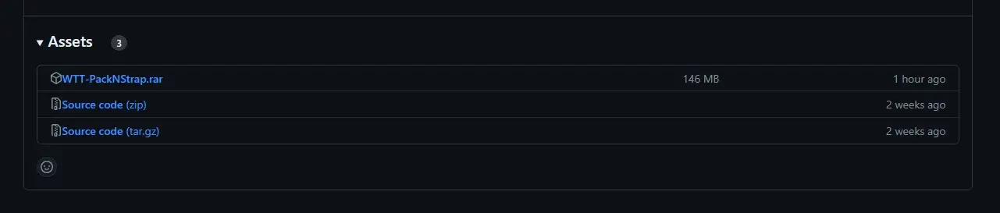

WTT - Pack 'n' Strap
- Downloads
- 212,891
- Favourites
- 146
- Mod lists
- 320
REQUIRES WTT-COMMONLIB ~2.0.0 REQUIRES USE ITEMS ANYWHERE ~1.3.1
The development team behind WTT proudly present our second standalone module for Tarkov - Pack ‘n’ Strap! This successor to [DEPRECATED] Small Cases - Now With Fannypack! comes packed with a brand new addition: Battle Belts!
This mod adds a total sixteen items (eight cases, and eightTEEN belts) to various traders at different loyalty levels. The code has undergone a complete upgrade, some of the cases have been resized and rebalanced, and the belts are all configured to go into your tactical rig slot, as well as your armband slot!
Since this can be game-breaking to some people who prefer a more normal run-through, included is a config to enable losing your armband slot on death. Simply set loseArmbandOnDeath to true in the config.json to lose the battle belts on death.
This one has been in the works for a while, folks. We thought for a long time that custom rig layouts were all but impossible, and now we’re able to release the first of many new layouts made by the WTT team.
Here’s to the second entry in our standalone series of mods. We hope you enjoy!
Like my work? Buy me a coffee!
https://ko-fi.com/grooveypenguinx
To Download Pack N’ Strap:
- Navigate to the download page, and click on the WTT-PackNStrap.rar. Should look like this: 
To Install Pack N’ Strap:
Open the archive, and drag/drop the users AND BepInEx folder into your main SPT install directory like this:
Battle Belts are the newest addition to Small Cases family! Featuring fully custom layouts, belts are a new rig type that can be worn in your tactical rig slot, as well as your armband slot!
Before custom rig layouts were possible, we discussed how cool battle belts would be to have. A new way to give the player just a little more space to utilize medicine, weapons, or store some extra loot while traveling through the maps.
Now, thanks to the hard work of the WTT team, you can!
Once the belt is equipped into your armband slot, you are able to hotkey, reload, and use items directly from the Battle Belts!
Along with the belt additions, Small Cases underwent some minor balancing and additions as well! The server code has been converted to a newer system, the small documents case and small toolpouch both received their own unique layouts, some cases were resized and rebalanced pricewise, and the Fannypack no longer goes in your special slot, as it’s now part of the battlebelt system that goes in your armband/rig slot.
Here’s a rundown of each case:
Small Ammunition Pouch: A small pouch that has a 4x2 internal grid to store ammunition. (Prapor sells this at level 1)Small Key Ring: A small keyring with a 3x2 internal grid to store keys. (Therapist sells this at level 1)Vintage Lunchbox: A lunchbox with a 3x3 internal grid to store your food and drinks. (Jaegar sells this at level 1)Small Medicial Pouch: A medicine pouch with a 3x4 internal grid to store all your meds. (Therapist sells this at level 1)
Small Magazine Pouch: A small pouch with a 4x4 internal grid to store your mags. (Prapor sells this at level 1)Small Scavenger’s Case: A small case with a 8x5 internal grid to store all your junk. (Therapist sells this at level 1)Small Tool Bag: A toolcase with a 1x2, 3x3, 1x2 and 1x2 internal grid to store all your tools. (Mechanic sells this at level 1)Small Leather Docket: A small docscase with a 2x3 and a 2x2 internal grid to store documents, money, and keycards. (Therapist sells this at level 1)
What is Welcome To Tarkov?
Welcome To Tarkov (WTT) is a mod for SPT AKI that has been in development for over a year. What started as a small passion project has grown in size to incorporate 10+ core members as well as contributions from other well-known mod authors and friends of WTT alike.
How does Welcome To Tarkov change the game?
As a mod, WTT overhauls SPT AKI, touching on almost every vanilla game system, as well as adding completely new systems to the game and its core mechanics. Inspired by open-world hardcore survival projects like STALKER: Anomaly and STALKER: GAMMA, WTT takes SPT’s artificial multiplayer MMO difficulty adders and replaces them with a challenging world economy, loot scarcity rebalancing, a lore friendly quest overhaul, and a map-traveling system built from rewritten portions of the Traveler mod allowing seamless travel between maps. Aside from its changes to the game’s core properties, WTT also adds to the world’s variety of traders, NPC’s, characters, items, and quests:
- Over 500 custom bundles adding new weapons, attachments, wearables, containers, food, medical, and barter items.
- New bosses with their own custom gear that will be properly incorporated into WTT’s quest lines.
- New, meaningful traders with their own lore-friendly quests and narrative elements to help the player progress through the story-line of WTT.
- New playable characters and outfits that will add to the player’s customization abilities.
- New quest types incorporating brand new map extraction points, putting the player’s knowledge and familiarization of SPT’s maps to the test.
Welcome To Tarkov stands as one of the largest mods created for SPT AKI thus far.
When does Welcome To Tarkov release?
Thursday.
Which Thursday?
TBD
Want to follow our progress?
You can follow the project through it’s development in our discord here:
Version
2.0.4
- integrated Trenchfoot’s belt slot (ty trench!)
- fixed tags being reset every raid
- added TWO NEW BELTS by Eukyre: WARTECH Warbelt Vector belt (Multicam) TYR Tactical Gunfighter Belt (Assault, Olive Drab)
Dependencies
Version
2.0.3
fixed sorting of items in traders fixed armband not being lost on death (totally on me /bonk) fixed armband insurance exploit by disabling belts from being insured & stopping insured items inside the belt from being returned (since they aren’t lost) (thanks bushtail for your PR) ran the bundles through compression - the overall size of the mod is SIGNIFICANTLY smaller ;)
Dependencies
Version
2.0.2
REQUIRES USE ITEMS ANYWHERE ~1.3.1
- fixed the bindable items breaking by just incorporating my patches into CJ’s Use Items Anywhere - THIS MOD NOW REQUIRES USE ITEMS ANYWHERE TO FUNCTION
Dependencies
Version
1.1.13
For SPT 3.11 only!
Small patch to fix the Tyr Gunfighter belt layout. (thanks to Speenks for finding this!)
-Tron
Version
1.1.12
Fixed filters to allow more medical items in the following:
Surgeon Secure Container
Mobile Infirmary Secure Container
Small Med Pouch from Small Cases
Any belt that had med specific slots
Let me know if I missed any.
-Tron
Version
1.1.0
3.11 Release!
-
Removed 3 belts, and added several more, total of 22 belts! (Big shoutout to Tron and Wireman!)
-
Removed belts from being allowed into the rig slot (finally!)
-
Added new classes to the client and server for CustomContainerItem, CustomBeltItem, and CustomSecureContainerItem
- These new classes have a **CustomLayoutName _**prop in order to have fully custom layouts for belts, containers, and secure containers!
-
Added new custom secure containers! Mostly utility containers, with more to come! (T-Ron)
-
Added new small cases! (TRooooooooon)
-
Added a few LARGE cases 😉(Shoutout to MadManBeavis!)
-
Rebalanced prices and weights on most of the items in the mod
-
Added support for multiple barters on multiple traders
We told you all we were cooking
Version
1.0.7
- Updated to 3.9!
- Updated customitemservice staticloot method to the new 3.9 system
- fixed addtobots
- added addtohalloffame
- added addtospecialslots